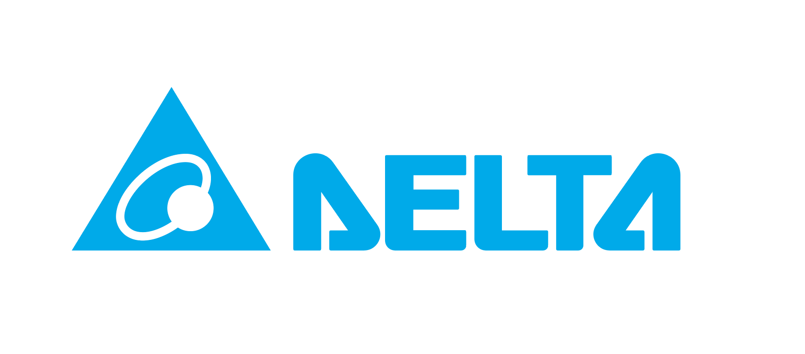
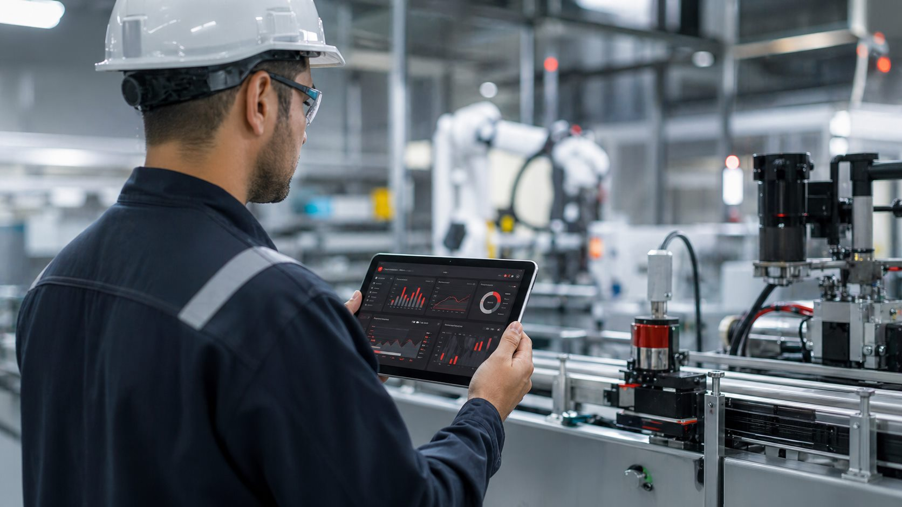
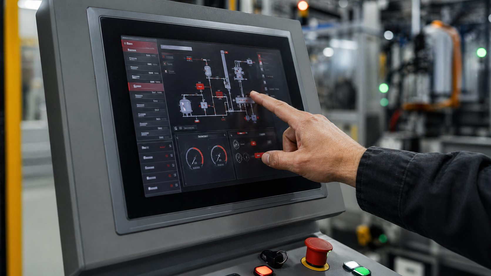

Programação de PLC
Lógica de controle, intertravamentos, diagnósticos e ajustes para operação estável em campo, linhas de produção e sistemas industriais no RJ.
Marcas que aplicamos em projetos industriais e offshore.



A RBB Automação atua no Rio de Janeiro com modernização, integração e suporte técnico para sistemas industriais, conectando automação elétrica, instrumentação e operação em escopos pensados para a rotina real da planta e para ambientes com exigência de campo.
Nossa entrega combina leitura operacional, clareza técnica e execução em campo para reduzir falhas, recuperar confiabilidade e sustentar resultado depois da partida, tanto em indústria quanto em aplicações offshore.
Estruturamos o escopo conforme a necessidade real do processo, instrumentação de campo, interface de operação e condições de planta, com atuação orientada para indústria, utilidades, integração de sistemas e demandas offshore no Rio de Janeiro.
Lógica de controle, intertravamentos, diagnósticos e ajustes para operação estável em campo, linhas de produção e sistemas industriais no RJ.

Conectividade, integração de dados, supervisão avançada e visão operacional para decisões mais rápidas em indústria, utilidades e operação remota.

Montagem, organização, retrofit e manutenção de painéis com foco em segurança, acesso técnico e continuidade operacional.

Interfaces claras para operação, alarmes, tendências, diagnósticos e acompanhamento do processo em plantas industriais e sistemas offshore.

Ajustes de velocidade, torque, rampas e sincronismo para desempenho seguro, repetibilidade operacional e resposta confiável em campo.

Capacitação técnica para equipes de operação, manutenção e elétrica com foco em aplicação prática e leitura operacional do processo.
Entregamos com o processo rodando. Cada escopo parte da leitura real da planta, não de uma proposta genérica.
Projeto elétrico, instrumentação de campo, montagem de painel, programação de CLP e comissionamento sob responsabilidade técnica única, sem terceirização de etapas críticas.
Soluções desenvolvidas com atenção às condições de campo e à rotina do operador. Funciona na planta, não só na documentação.
Análise técnica antes da proposta. Cada instalação tem restrições próprias que definem a solução mais segura, eficiente e sustentável.
Estrutura para plantas industriais no Rio de Janeiro e capacidade de atendimento em projetos offshore e operações com exigência de campo.
CLP, IHM, inversores e supervisórios já geram informação. O desafio é transformar esses sinais em leitura clara para decisão rápida.
A RBB estrutura coleta de variáveis, integração com SCADA, dashboards operacionais, alarmes úteis e indicadores para manutenção, produção e gestão.
Estados de máquina, paradas, alarmes, produção e disponibilidade acompanhados com contexto operacional.
CLP, IHM, SCADA, inversores, redes industriais e banco de dados trabalhando como uma cadeia única.
Indicadores técnicos para priorizar manutenção, reduzir recorrência de falhas e sustentar melhoria contínua.

Envie a demanda técnica com as informações principais do processo para acelerar a análise comercial e técnica de escopos industriais e offshore.